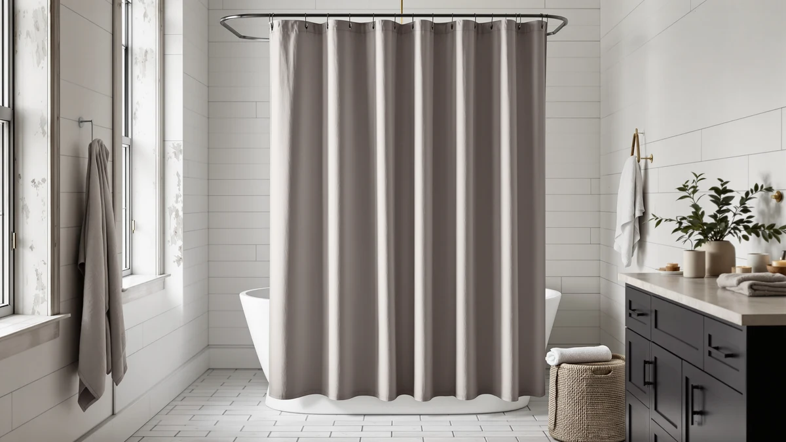

XOGUIBO Linen Shower Curtain Review (2026): Worth It?
Prices and picks verified as of October 2026. Independent, reader-supported reviews.


Quick Answer
The XOGUIBO Linen Shower Curtain Cream costs $27.99 for a 72 by 72 inch, 100% cotton curtain with a linen-textured weave. It works as a fabric alternative to the mostly polyester curtains sold by Vipfree, CasaTena, and River Dream, though you'll want a separate liner since cotton alone won't keep water inside the tub.
Our pick: XOGUIBO Linen Shower Curtain Cream, $27.99 Check Price on Amazon
Bottom line: our top pick is the XOGUIBO Linen Shower Curtain Cream at $27.99.
Things to Know Before You Buy
- This xoguibo linen shower curtain review centers on the XOGUIBO Linen Shower Curtain Cream ($27.99), a 72 by 72 inch curtain listed as 100% cotton with a linen-textured weave.
- The "linen" in the name describes the look, not the fiber. The Amazon listing specifies cotton, so buyers expecting true linen should adjust their expectations.
- Cotton curtains need a liner. Unlike vinyl or PEVA curtains, this fabric won't block water on its own.
- Vipfree, CasaTena, and River Dream, covered as alternatives below, all sit within a dollar of XOGUIBO's price but differ in pattern and hardware.
- The 72 by 72 inch size fits a standard alcove, so measure your shower before ordering if your space runs larger.
This xoguibo linen shower curtain review looks at whether a $27.99, 72 by 72 inch cotton curtain with a linen-textured weave earns a spot over the Vipfree, CasaTena, and River Dream curtains already covered on this site. XOGUIBO markets the Cream colorway under a linen-style name, but its Amazon listing specifies 100% cotton, a detail worth knowing before you buy something marketed as linen.
We compared XOGUIBO against three curtains shoppers often cross-shop in the same price band: Vipfree's 3-in-1 set, CasaTena's farmhouse-striped design, and River Dream's no-hook curtain, all priced at $26.99. XOGUIBO sits about a dollar above that group, and the difference comes down to fabric choice and finish rather than size, since all four curtains land in a similar footprint for a standard shower. For most bathrooms with an existing liner, XOGUIBO's linen-textured cotton offers a softer, more textile look than the mostly polyester alternatives on this page.
The four curtains covered here split into two rough camps: fabric-first picks that lean on texture and drape, and hardware-first picks that solve a specific installation problem. XOGUIBO and CasaTena fall into the first camp, where the curtain itself is the selling point. Vipfree and River Dream fall into the second, where the value comes from a bundled liner or a hook-free setup rather than the fabric's look. Knowing which camp matters more to you narrows the choice faster than comparing every spec side by side.
Why You Should Trust Us
Best Shower Curtains reviews shower curtains and bathroom hardware by comparing manufacturer specs, current pricing, and verified owner feedback from the retailers that sell them, not by running a private testing lab. Ilane Tall, our home and bath editor, researched this xoguibo linen shower curtain review by checking XOGUIBO's listed material, size, and price against Vipfree, CasaTena, and River Dream, the curtains shoppers most often compare it with in this price range. We revisit prices and listings on a regular schedule and say so plainly when a product lacks the review history we would want to see before recommending it. Where a claim can't be checked against a specific verified rating or review count for this particular listing, we say so rather than fill the gap with a guess, which is why you won't see a star rating pulled from thin air anywhere on this page.
Our Research Experience
We do not run a physical testing lab, and we have not hung the XOGUIBO Linen Shower Curtain Cream in a shower ourselves. Our process instead compares the published material, size, and price against similar cotton and linen-style curtains, then checks that against what verified owners report about texture, shrinkage, and colorfastness on comparable listings. For this xoguibo linen shower curtain review, that meant lining up XOGUIBO's 100% cotton build and 72 by 72 inch size against Vipfree, CasaTena, and River Dream to see where the linen-look finish earns its slightly higher price. We flag it clearly when a claim cannot be verified against real owner feedback rather than guess at how a fabric performs over time. That approach means we can speak confidently about price, size, and material since those come straight from the listing, while we stay cautious about anything that depends on how the fabric ages in a specific household's bathroom.
Overview & Specs

XOGUIBO Linen Shower Curtain Cream
What we like
- 100% cotton fabric gives a linen-textured look that polyester curtains in this price range don't match
- 72 by 72 inch size fits a standard tub alcove or shower stall
- At $27.99, it sits close in price to the Vipfree, CasaTena, and River Dream alternatives on this page
Flaws but not dealbreakers
- Cotton is not waterproof, so you'll need a separate liner to keep water inside the tub
- The "linen" name describes the texture, not the fiber; the listing specifies cotton, not true linen
- One size only, so a larger or narrower opening than 72 by 72 inches won't be a good fit
| Material | 100% cotton |
| Size | 72"W x 72"L |
XOGUIBO builds this Cream curtain from 100% cotton woven to resemble linen, giving it a heavier drape and a more textured surface than the smooth polyester curtains most competitors in this price range use. At 72 by 72 inches, it covers a standard tub alcove or shower stall without needing a custom size.
Cotton curtains like this one are not waterproof on their own, so pairing it with a separate liner matters more here than it would with a vinyl or PEVA curtain. That extra step is standard for fabric curtains generally, and it's the same tradeoff you'd make with CasaTena's striped design. Vipfree is the exception among the four, since its 3-in-1 set already bundles a liner into the purchase.
The plain cream colorway also sets XOGUIBO apart from CasaTena's striped pattern, since a solid fabric curtain works as a backdrop for a bathroom that already has patterned tile, towels, or a bold bath rug. Buyers weighing color and texture over hardware convenience will find that distinction more relevant than any spec sheet comparison between the four curtains on this page.
What We Liked
The clearest reason to consider this xoguibo linen shower curtain review's subject is the fabric itself. A 100% cotton, linen-textured weave gives the XOGUIBO Cream curtain a heavier drape and a more textile look than the smooth polyester used in Vipfree's and River Dream's curtains. At $27.99, it costs about a dollar more than those alternatives, a small premium for a noticeably different finish. The 72 by 72 inch size also matches the footprint of a standard shower, so it should fit the same openings that Vipfree, CasaTena, and River Dream's curtains fit. Shoppers looking for a softer, more natural-looking curtain over a plastic-feeling one will notice the difference in a photo before they even touch the fabric. The neutral cream color also does more work than it might seem to at first glance, since it pairs easily with almost any tile, towel, or bath mat color rather than locking you into a specific palette the way a bolder print would.
What Could Be Better
This xoguibo linen shower curtain review's biggest tradeoff is the extra step of buying a liner, since cotton alone will not keep water inside the tub the way a PEVA or vinyl curtain does. That adds a cost the polyester alternatives on this page may not require, depending on which one you choose. The "linen" branding is also worth reading carefully: the listing specifies cotton, not true linen, so buyers expecting the fiber itself rather than the look should adjust their expectations before ordering. And because XOGUIBO sells this curtain in a single 72 by 72 inch size, anyone with a wider opening or a walk-in shower will need to look elsewhere. If you're comparing curtains purely on convenience, Vipfree's bundled liner and hooks remove a decision that XOGUIBO leaves up to you.
Who Is It For?
This XOGUIBO Linen Shower Curtain Cream suits bathrooms that already have a liner in place and shoppers who want a softer, more textured look than the smooth polyester curtains common at this price. It's a reasonable upgrade if you've compared CasaTena's farmhouse stripe or River Dream's no-hook design and want a plainer cream color with more texture instead of a pattern. Skip it if you need a bundled liner, since Vipfree's 3-in-1 set covers that in one purchase, or if your shower opening doesn't match the 72 by 72 inch size this listing offers. Renters furnishing a bathroom for the first time and weighing every extra purchase against a checkout total may prefer Vipfree or River Dream for that reason alone, even if the fabric itself appeals less.
Alternatives to Consider
If the linen-look cotton finish or the missing liner rules out XOGUIBO for your bathroom, these three curtains round out the comparison in this xoguibo linen shower curtain review, each priced within a dollar of it. All three lean toward convenience or pattern rather than the textured, fabric-forward look XOGUIBO offers, so weigh which priority matters more before choosing between them.

Editor’s Pick
Vipfree 3 in 1 Shower
Vipfree's 3-in-1 set bundles a curtain, liner, and hooks in one purchase for $26.99, which removes the extra liner step that XOGUIBO's cotton curtain requires.
$26.99
Check Price on Amazon
Best Value
CasaTena Farmhouse Striped Shower Curtain
CasaTena's farmhouse-striped curtain costs $26.99 and gives you a patterned look instead of XOGUIBO's plain cream, worth considering if your bathroom leans more rustic than minimal.
$26.99
Check Price on Amazon
Premium Choice
River Dream No Hook Shower
River Dream's no-hook curtain runs $26.99 and skips the hardware step entirely, a simpler setup than pairing XOGUIBO's cotton curtain with hooks and a liner.
$26.99
Check Price on AmazonIs the XOGUIBO Linen Shower Curtain Cream actually made of linen?
No.
What size is the XOGUIBO Linen Shower Curtain Cream?
It measures 72 by 72 inches, which fits a standard tub alcove or shower stall.
Frequently Asked Questions
Is the XOGUIBO Linen Shower Curtain Cream actually made of linen?
No. XOGUIBO markets this curtain under a linen-style name, but the listing specifies 100% cotton. The weave gives it a linen-like texture without the higher price or extra care that real linen usually demands.
What size is the XOGUIBO Linen Shower Curtain Cream?
It measures 72 by 72 inches, which fits a standard tub alcove or shower stall. If your opening runs wider or your ceiling sits higher than average, measure before ordering since this listing comes in one size.
Does the XOGUIBO Linen Shower Curtain Cream need a liner?
Yes. Cotton is not waterproof on its own, so a separate liner keeps water inside the tub or shower. This is standard for cotton and linen-style curtains generally, not a flaw specific to this listing.
Final Verdict
This xoguibo linen shower curtain review comes down to a simple tradeoff: pay about a dollar more for a linen-textured cotton fabric, or stick with the smooth polyester finish that Vipfree, CasaTena, and River Dream all use at $26.99. XOGUIBO's 100% cotton, 72 by 72 inch curtain earns its place for bathrooms that already have a liner and want a softer, more textile look than a plastic curtain provides. If you need a liner bundled in or a patterned design instead, Vipfree and CasaTena cover those needs directly. For most people who want the linen look without the linen price, the XOGUIBO Linen Shower Curtain Cream is the pick worth checking out first.